Week 10 - Game Simulations
Date: 2026-10-26
today:
- Data Structure Gardens
- Little performances
- Coding challenge: Squirrel Eat Squirrel
Data Structure Garden
This is a review of building up arrays of objects, complete with their own lifespan.
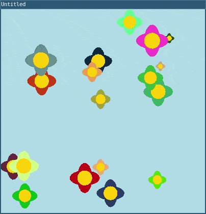
In this tutorial, we will use L5 to simulate an interactive flower garden. In this project, your digital canvas will contain 20 randomly generated flowers, each a different color and size. Clicking on the canvas adds new, unique flowers. Each flower is programmed with a wilting animation. This animation causes the flowers to slowly shrink and vanish, much like the natural cycle of a flower’s life.
Step 1: Make a single flower object
Let’s start our flower garden by creating one flower. We can start by drawing it using an ASCII character, so we need data on the x-coordinate, the y-coordinate, and the character for our flower. We’ll use a ‘@’ symbol to represent our first flower
- Create a flower object by bundling the flower’s canvas
coordinates with the character used to draw it. Let’s store
the object in a variable named flower. Add this code above
setup():
-- Flower Object
local flower = {
x = 200,
y = 100,
char = '@'
}
function setup()
size(400, 400)
end- Print your object to the console by adding the following
line of code in
setup(). Note that we loop through our table of key-value pairs usingpairs(tablename):
for i,val in pairs(flower) do
print(i,val)
endwhich returns the output:
x 200
y 100
char @- Set the background to ‘lightblue’
Your code should look like this:
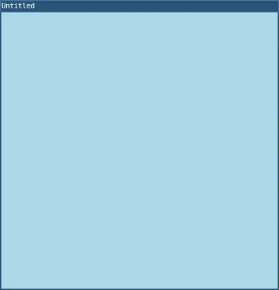
require("L5")
-- Flower Object
local flower = {
x = 200,
y = 100,
char = '@'
}
function setup()
size(400, 400)
-- Print object in console.
for i,val in pairs(flower) do
print(i,val)
end
end
function draw()
background('lightblue')
endTry running your code. You should see your flower object printed out to the console.
Here’s the general syntax for defining an object:
-- Define an object
local objectName = {
property1 = value1,
property2 = value2,
property3 = value3
}The syntax for objects uses:
- curly braces (
{}) to enclose a bundle of properties; - Properties can be names, such as the names of variables or functions, or they can be strings, or even other tables. When using spaces in property names, Lua requires square brackets to interpret them correctly. For example, I might create an object with a property for a ‘first name’ and a ‘last name,’ like this:
local ironMan = {
['first name'] = 'Tony',
['last name'] = 'Stark'
}- If your property has no spaces, the quotes and brackets
around the property name are optional, such as
first_name = 'Tony'. - an equal sign (
=) to separate each property with specific values;- Values can be of any datatype, and can even be a function!
- commas (
,) to separate each[property] = valuepair
You can store objects by initializing new variables when you define them. In the code above, you declared a variable named flower. You then initialized the flower variable with an object whose properties represent a flower that can be drawn on the window.
To check the properties and values of an object, you printed the key value pairs from the table.
Step 2: Use your object
You can access any value stored in object properties by using its square bracket name as shown above or its variable name, property name, and dot notation like so (as long as the property name doesn’t have spaces in it or special characters, in which case you will need to use the square brackets syntax):
-- Access the object's property1 value with dot notation.
objectName.property1- Use the text() function with flower object properties to place the flower on the canvas.
- We can specify a color for the text and place that
before writing to the screen
- In draw(), add the following code:
-- Fill shapes and text with a specified carnation pink color
fill('pink')
-- Display flower object.
text(flower.char, flower.x, flower.y)- You can use textSize() before the text function to set the size of the flower.
-- Increase the text size
text(100)Your code should look like this:
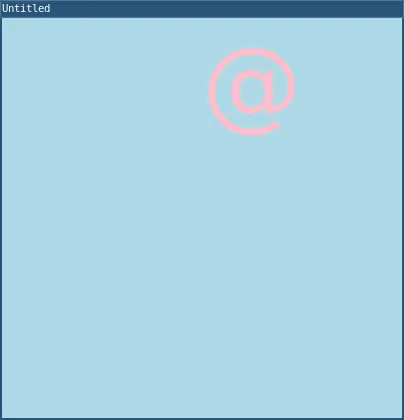
require("L5")
-- Flower Object
local flower = {
x = 200,
y = 100,
char = '@'
}
function setup()
size(400, 400)
end
function draw()
background('lightblue')
-- Increase the text size
textSize(100)
-- Fill shapes and text with a specified carnation pink color
fill('pink')
-- Display flower object
text(flower.char, flower.x, flower.y)
endTo access values in the flower object, we use dot notation, which uses the dot operator to access properties and values within objects.
In the code above, you accessed:
- the character for the flower with
flower.char - the x-coordinate with
flower.x - the y-coordinate with
flower.y
Since these values represent strings and numbers, they can be used in the text() function, similar to the way variable names are used to access the value they store.
Try this:
- Add a
sizeproperty to the flower object. - Replace the
textSize()value with theflowerobject’ssize.
Step 3:
Define a createFlower() function
Now, let’s define a function that can display different
flowers on the canvas. We will define a
createFlower() function that will allow us to
customize the flower objects we create. We want to make sure
that we can change the x- and y-coordinates for different
flowers. We also want to change their size and
color. One way to do that is to add new
properties to the flower object for size and color. In this
project, we also want the flower to appear, then disappear
after some time. To do this, we will also include a
lifespan property for our flower object.
We want our createFlower() to return
information when it’s called, just like the built-in
text() function returns text on the canvas.
Therefore, we must specify a return value. Using return
values is a great way to save information computed by the
function in a variable or array.
In this example, we will be using random() to create variety in our flowers when they’re drawn on the canvas.
- Define the
createFlower()function, which creates a random flower object. All values will be set randomly each timecreateFlower()is called.- Outside of draw() and setup(), add the following function declaration:
-- Function that creates a random flower object.
function createFlower()
-- Define a flower object.
local flower = {
x = random(20, 380),
y = random(20, 380),
size = random(20, 75),
lifespan = random(255, 300),
color = color(random(255), random(255), random(255)),
}
-- Return the flower object.
return flower
end- Test the
createFlower()function by using it to create a flower object, and store it in a variable calledmyFlower.- Add the following in the draw() function:
-- Create flower object
local myFlower = createFlower()Draw an ellipse on
the canvas using myFlower properties. * Add the
following in the draw() function:
-- Use flower object properties to draw an ellipse.
fill(myFlower.color)
ellipse(myFlower.x, myFlower.y, myFlower.size)- Slow down the rate at which each flower appears by
changing the frame rate to one frame per second. In setup(), add:
frameRate(1).
Your code should look like this:
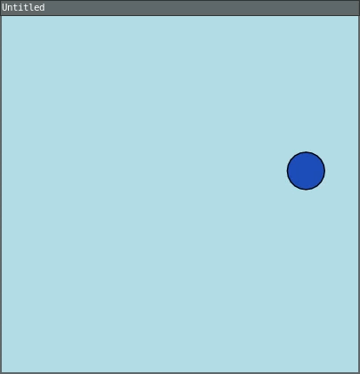
require("L5")
function setup()
size(400, 400)
frameRate(1)
end
function draw()
background("lightblue")
-- Create flower object.
local myFlower = createFlower()
-- Use flower object properties to draw an ellipse.
fill(myFlower.color)
ellipse(myFlower.x, myFlower.y, myFlower.size)
end
function createFlower()
-- Define flower object.
local flower = {
x = random(20,380),
y = random(20,380),
size = random(20,75),
lifespan = random(255,300),
color = color(random(255), random(255), random(255)),
}
-- Return flower object.
return flower
endIn the code above, you use createFlower() to
create and return a new flower object with random values,
then store the object in the variable myFlower.
myFlower is used to access its property’s
random values, which are used to draw an ellipse on the
canvas. Each time draw() runs, a new random flower object is
created, and its properties are used to draw a new random
ellipse on the canvas.
Visit the L5 reference to learn more about random().
Try this:
- Change the random range for the flower’s x and y location and size.
- Get creative with the color generation; maybe it’s shades of only blues, reds, or purples.
Step
4: Define the drawFlower() function with a
parameter
Now that we know that createFlower() creates
and returns a new flower object, let’s define the
drawFlower() function. Our
drawFlower() function will receive a flower
object as an argument and place it on the canvas. This will
help make our code organized and manageable.
- Outside of all other functions, define the
drawFlower()function with one parameter representing a flower object.
function drawFlower(flower)
end- Inside the
drawFlower()function, draw the attributes of a flower, including the petals and center of the flower. Remember to use the flower object properties for thexandylocations,size, andcolor. You can add the following code to the function body:
noStroke()
fill(flower.color)
-- Draw petals.
ellipse(flower.x, flower.y, flower.size / 2, flower.size);
ellipse(flower.x, flower.y, flower.size, flower.size / 2)
-- Draw a yellow center.
fill(255, 204, 0)
circle(flower.x, flower.y, flower.size / 2)Next, we will test the drawFlower()
function. Add the following to the draw() function.
-- Testing drawFlower().
let flower1 = createFlower();
drawFlower(flower1)Your code should look similar to this:
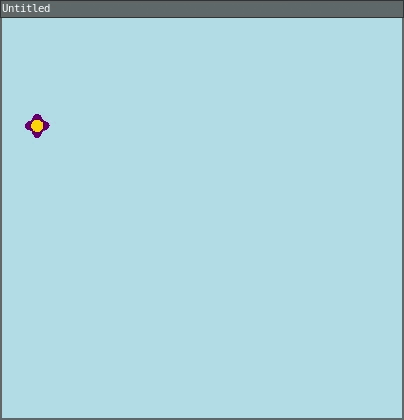
require("L5")
function setup()
size(400, 400)
frameRate(1)
end
function draw()
background("lightblue")
-- Testing drawFlower().
local flower1 = createFlower()
drawFlower(flower1)
end
function createFlower()
local flower = {
x = random(20,380),
y = random(20,380),
size = random(20,75),
lifespan = random(255,300),
color = color(random(255), random(255), random(255))
}
return flower
end
function drawFlower(flower)
noStroke()
fill(flower.color)
-- Draw petals.
ellipse(flower.x, flower.y, flower.size / 2, flower.size)
ellipse(flower.x, flower.y, flower.size, flower.size / 2)
-- Draw a yellow center.
fill(255, 204, 0)
circle(flower.x, flower.y, flower.size / 2)
endIn the code above, createFlower() is used to
create and return a random flower that is stored in
flower1. The random flower
(flower1) is then passed into
drawFlower(), which accesses the flower object
properties to draw a flower on the canvas. This process
occurs each time the draw() function runs, so random flowers
appear and disappear on the canvas.
Step 5: review - Arrays of objects
Before we move on to making our garden of flowers by using an array, let’s better understand how arrays work with a few simple examples. Arrays are objects that can store multiple values in one variable name. Each value is stored in an element with a specific location known as its index. The index of the first element in any array in Lua is 1.
Tables are used for arrays and objects in Lua.
Example of building an array with a Lua table:
-- This is an ordered table, AKA a list or array
local fruits = {'apple', 'banana', 'cherry', 'dragon fruit', 'elderberry', 'fig', 'grape', 'honeydew'}Each item in this array can be accessed with a number, beginning at the index 1.
print(fruits[1]) -- 'apple'
print(fruits[3]) -- 'cherry'Prepending a # to a table gives us the
length (total elements) in an array. So we can get the very
last item from the list very easily, no matter how many
items are in that array.
print(fruits[#fruits]) -- 'honeydew'Example 1: Creating and drawing an array of names
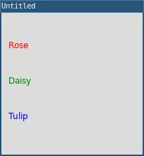
require("L5")
-- Create an array flowers
local flowers = {"Rose", "Daisy", "Tulip"}
function setup()
size(200, 200)
background(220)
-- Draw the first name.
fill('red')
text(flowers[1], 10, 50)
-- Draw the second name.
fill('green')
text(flowers[2], 10, 100)
-- Draw the third name.
fill('blue')
text(flowers[3], 10, 150)
endlocal flowers = {"Rose", "Daisy", "Tulip"}In this example, we’ve created an array using curly
brackets ({ }) and commas that separate each
element in the array. The array is a collection of strings,
each representing a type of flower, and is stored in a
variable called flowers. Each element of the
array holds a string with a flower name. Each element can be
accessed using its index number. For example,
"Rose" is located at index 1,
"Daisy" at index 2, and
"Tulip" at index 3.
local rose = flowers[1]In the code snippet above, we access the first element of
the flowers array at index 1 using the index
notation: flowers[1]. In the example above,
this syntax is used to place text on the canvas with the
names accessed from various elements in the
flowers array.
We then assign that value to a new variable named
rose. rose now holds the string
"Rose", which is the first flower name in the
flowers array. Values stored in other elements
can be accessed in the same way.
Example
2: Using a for loop to iterate through the
array of names

require("L5")
-- Create an array flowers
local flowers = {"Rose", "Daisy", "Tulip"}
function setup()
size(200, 200)
end
function draw()
background(220)
fill(0)
-- Use a for loop to iterate over the array.
for i=1,#flowers do
text(flowers[i], 10, 50 * i)
end
endOur second example uses a for loop to
iterate through each element in the array and print the text
on the canvas. Iteration is a process where a block
of code is executed repeatedly for each element in an
array.
for i=1,#flowers do
text(flowers[i], 10, 50 * i)
endTo iterate, the code snippet above uses a
for loop that “looks through” each element of
the flower array. According to the for loop,
the index i starts at 1 and increases with each iteration
until it reaches the max number of elements in the array.
Arrays in Lua start their index at 1. The last
element in the array can be accessed by referencing the item
stored at the length of the array. The number of elements in
any array can be accessed by using the array#
symbol. In the for loop above, the length of the flowers
array is accessed using #flowers. To access the
values in the array, we use flowers[i] in the
for loop in the text() function to display the
value in each element as text on the canvas.
Example 3: Adding new elements to the array
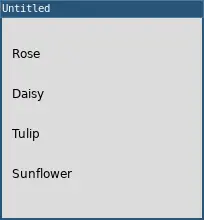
require("L5")
-- Create an array flowers
local flowers = {"Rose", "Daisy", "Tulip"}
function setup()
size(200, 200)
table.insert(flowers, "Sunflower"); --add new element
background(220)
fill(0)
-- Use a for loop to iterate over the array.
for i=1,#flowers do
text(flowers[i], 10, 40 * i)
end
endlocal flowers = {
"Rose", "Daisy", "Tulip" --Inserted elements will go here
}
-- Add a new element to the end of the array
table.insert(flowers, "Sunflower")Using the array method table.insert(),
you can add a new element to the end of the array. In this
example, we are adding “Sunflower” to the end of the
flowers array.
Example 4: Removing an array element
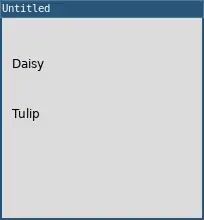
require("L5")
-- Create an array flowers
local flowers = {"Rose", "Daisy", "Tulip"}
function setup()
size(200, 200)
fill(0)
-- Starting at index 1, remove one flower.
table.remove(flowers, 1)
background(220)
for i=1,#flowers do
text(flowers[i], 10, 50 * i)
end
endlocal flowers = {"Rose", "Daisy", "Tulip"}
-- remove one element from flowers at index 1
table.remove(flowers, 1)In order to remove elements from an array, we use the
function table.remove().
The function table.remove(flowers, 1) modifies
the flowers array with two parameters: one for the array,
and another for the index of where to start removing. You
can optionally add a third that specifies the number of
elements to remove. table.remove(flowers, 1)
results in the removal of "Rose" from the
array, leaving only "Daisy" and
"Tulip".
Example 5:
Using for..in loop for arrays
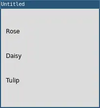
require("L5")
-- Create an array flowers
local flowers = {"Rose", "Daisy", "Tulip"}
function setup()
size(200, 200)
background(220)
fill(0)
local y = 50
-- Use the for loop with ipairs to look at each element as a variable.
for i, flower in ipairs(flowers) do
text(flower, 10, i * y)
end
endfor i, flower of ipairs(flowers) do
-- flower declares a variable to store each current element
-- ipairs is the keyword to loop through each ordered element in an array
-- flowers is the name of the array to loop over
--do something with the current element
print(flower)
endWe can also iterate over an array using a
for..in loop. The flower variable
temporarily stores each element during the loop’s iteration.
The print(flower) statement inside the loop
prints the name of each flower to the console, cycling
through "Rose", "Daisy", and
"Tulip" in order.
Using a for...in loop can make code easier
to read when things become more complex.
Step 6: Generate multiple flowers with an array
Now, it’s time to generate multiple flowers on the screen using arrays.
- First, declare the
flowersarray at the top of your program. The curly brackets with nothing in them represent an empty array of flowers.
-- Array of flowers.
local flowers = {}- Outside of all other functions, define the
flowerPower()function.
-- Function to create 20 flowers.
function flowerPower()
endInside flowerPower(), create 20 flower
objects using a for loop and add them to your
flowers array.
for i=1,20 do
-- Create a flower in a random location.
local flower = createFlower()
-- Add the flower to the flowers array.
table.insert(flowers, flower1)
endCall the flowerPower() function in the
setup() function to create the 20 flower objects.
flowerPower()- Use the
for..inloop withipairsfor arrays in the draw() function to draw each flower in theflowersarray. Thefor..inloop reads, for each flower element in the array of flowers, calldrawFlower().
for i,flower in ipairs(flowers) do
drawFlower(flower)
endYour code should look similar to this:
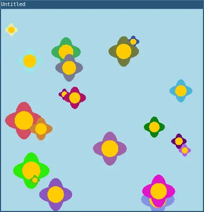
require("L5")
-- Array of flowers.
local flowers = {}
function setup()
size(400, 400)
frameRate(1)
-- Generate 20 flowers.
flowerPower()
end
function draw()
background("lightblue")
-- For each flower in the array of flowers.
for _,flower in ipairs(flowers) do
drawFlower(flower)
end
end
-- Function to create 20 flowers.
function flowerPower()
for i=1,20 do
-- Create a flower in a random location.
local flower = createFlower()
-- Add the flower to the flowers array.
table.insert(flowers, flower)
end
end
-- ... createFlower() and drawFlower()
function createFlower()
local flower = {
x = random(20,380),
y = random(20,380),
size = random(20,75),
lifespan = random(255,300),
color = color(random(255), random(255), random(255))
}
return flower
end
function drawFlower(flower)
noStroke()
fill(flower.color)
-- Draw petals.
ellipse(flower.x, flower.y, flower.size / 2, flower.size)
ellipse(flower.x, flower.y, flower.size, flower.size / 2)
-- Draw a yellow center.
fill(255, 204, 0)
circle(flower.x, flower.y, flower.size / 2)
endTry this:
Add a parameter to your flowerPower()
function so you can easily start with as many flowers as you
like.
Step 7: Update the flowers in the array
Now that we have tested the array of flowers, let’s draw the wilting effect. One of the benefits of using an array to control the flowers is the ability to update values in each flower.
- Outside of all other functions, define a function called
updateAndDrawFlowers():
function updateAndDrawFlowers()
endThis function will look at each flower in the array and will draw the flower.
for i,flower in ipairs(flowers) do
drawFlower(flower)
end- Inside the
forloop, decrease the flower object’ssizeandlifespanto simulate wilting.
Add a wilting animation effect, which will decrease the
flower size by 1% after the drawFlower()
function draws the flower. We create the wilting effect by
multiplying the current size by 0.99 and storing it back
into the flower’s size property. Then decrement
the lifespan and store it in the flower’s
lifespan variable.
-- Wilting effect for the flower
flower.size = flower.size * 0.99
-- Reduce lifespan.
flower.lifespan = flower.lifespan - 1- When the flower object’s
lifespanis zero or negative, we’ll remove it from the array by using the table.remove() method.
for i,flower in ipairs(flowers) do
-- Draw the flower.
drawFlower(flower)
-- Wilting effect for the flower.
flower.size = flower.size * 0.99
-- Reduce lifespan
flower.lifespan = flower.lifespan - 1
if flower.lifespan <= 0 then
-- Remove wilted flower.
table.remove(flowers, i)
end
endAdd
updateAndDrawFlowers()to the draw() function.Remove the call to
frameRate(1)fromsetup().
Your code should look similar to this:
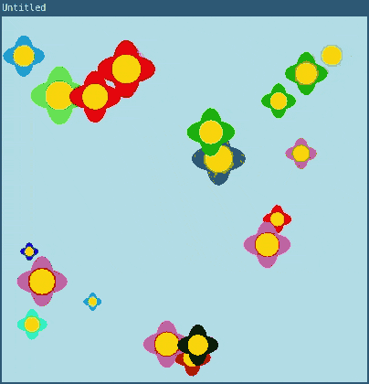
require("L5")
-- Array of flowers.
local flowers = {};
function setup()
size(400, 400)
-- Generate 20 flowers.
flowerPower();
end
function draw()
background('lightblue')
-- Call your new function.
updateAndDrawFlowers()
end
-- Define your new function
function updateAndDrawFlowers()
for i,flower in ipairs(flowers) do
-- Draw the flower.
drawFlower(flower)
-- Apply wilting effect by reducing size by 1%
flower.size = flower.size * 0.99
-- Reduce lifespan
flower.lifespan = flower.lifespan - 1
if flower.lifespan <= 0 then
-- Remove wilted flower.
table.remove(flowers, i)
end
end
end
-- Function to create 20 flowers.
function flowerPower()
for i=1,20 do
-- Create a flower in a random location.
local flower1 = createFlower()
-- Add the flower to the flowers array.
table.insert(flowers,flower1)
end
end
function createFlower()
local flower = {
x = random(20,380),
y = random(20,380),
size = random(20, 75),
lifespan = random(255,300),
color = color(random(255), random(255), random(255))
}
return flower
end
function drawFlower(flower)
noStroke()
fill(flower.color)
-- Draw petals.
ellipse(flower.x, flower.y, flower.size / 2, flower.size)
ellipse(flower.x, flower.y, flower.size, flower.size / 2)
-- Draw center.
fill(255, 204, 0)
circle(flower.x, flower.y, flower.size / 2)
endTry this:
Experiment with the wilting effect using subtraction, random numbers, or any other ideas you come up with.
Step
8: Add more flowers to the array with
mousePressed()
Finally, let’s add more flowers to the canvas by using mousePressed(), mouseX(), and mouseY to add another flower object to the flowers array each time the window is clicked.
- Outside of all other functions, write your
mousePressed()function:
function mousePressed()
local flower = createFlower()
-- reassign x to be mouseX
flower.x = mouseX
-- reassign y to be mouseY
flower.y = mouseY
-- add the flower to the flowers array
table.insert(flowers, flower)
endYour code should look something like this:
require("L5")
-- Array of flowers.
local flowers = {};
function setup()
size(400, 400)
-- Generate 20 flowers.
flowerPower();
end
function draw()
background('lightblue')
-- Call your new function.
updateAndDrawFlowers()
end
function mousePressed()
local flower = createFlower()
-- reassign x to be mouseX
flower.x = mouseX;
-- reassign y to be mouseY
flower.y = mouseY
-- add the flower to the flowers array
table.insert(flowers,flower)
end
function updateAndDrawFlowers()
for i,flower in ipairs(flowers) do
-- Draw the flower.
drawFlower(flower)
-- Apply wilting effect by reducing size by 1%
flower.size = flower.size * 0.99
-- Reduce lifespan
flower.lifespan = flower.lifespan - 1
if flower.lifespan <= 0 then
-- Remove wilted flower.
table.remove(flowers, i)
end
end
end
-- Function to create 20 flowers.
function flowerPower()
for i = 1, 20 do
-- Create a flower in a random location.
local flower1 = createFlower()
-- Add the flower to the flowers array.
table.insert(flowers,flower1)
end
end
function createFlower()
local flower = {
x = random(20,380),
y = random(20,380),
size = random(20, 75),
lifespan = random(255,300),
color = color(random(255), random(255), random(255))
}
return flower
end
function drawFlower(flower)
noStroke()
fill(flower.color)
-- Draw petals.
ellipse(flower.x, flower.y, flower.size / 2, flower.size)
ellipse(flower.x, flower.y, flower.size, flower.size / 2)
-- Draw center.
fill(255, 204, 0)
circle(flower.x, flower.y, flower.size / 2)
endBy Portia Morrell, Jaleesa Trapp, Kate Maschmeyer. Adapted to L5 by Lee Tusman. CC BY-NC-SA 4.0
Coding Challenge: Squirrel Eat Squirrel
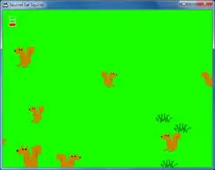
Squirrel Eat Squirrel is a game by programmer Al Sweigart.
Squirrel Eat Squirrel is loosely based on the game Katamari Damacy. The player controls a small squirrel that must hop around the screen eating smaller squirrels and avoiding larger squirrels. Each time the player’s squirrel eats a squirrel that is smaller than it, it grows larger. If the player’s squirrel gets hit by a larger squirrel larger than it, it loses a life point. The player wins when the squirrel becomes a monstrously large squirrel called the Omega Squirrel. The player loses if their squirrel gets hit three times.
Images: some squirrels from Open Game Art
Homework
Squirrel Eat Squirrel
Basic Requirements:
Advanced:
DOUBLE BONUS POINTS:
Reading and Write
Read Writing Aliens OR Duchamp, Markov, Queneau: A Mostly Delightful Quilt - 1 hour
Finish Squirrel Eat Squirrel